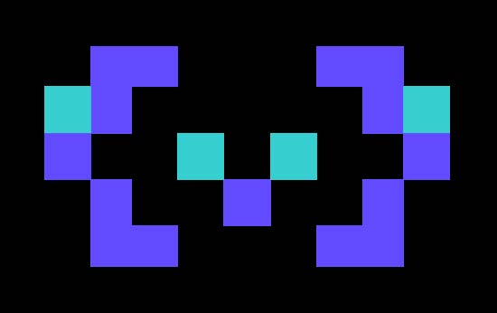
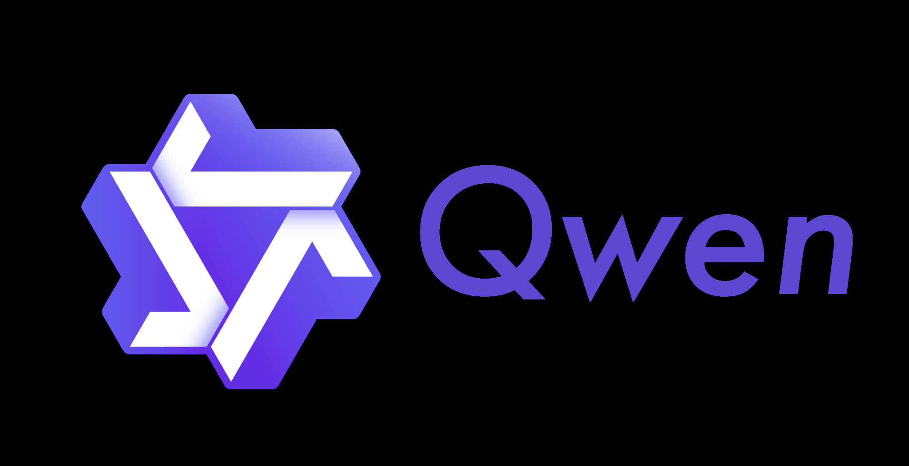
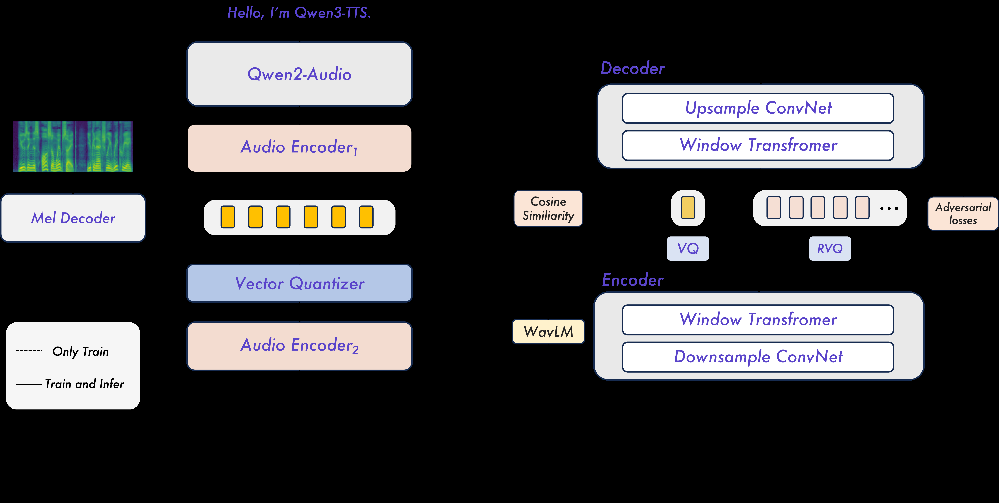
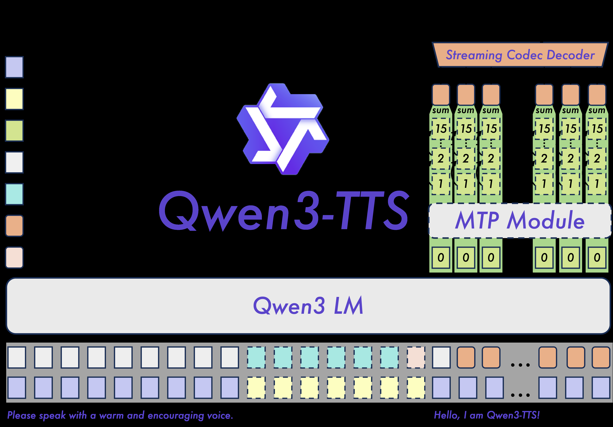

Qwen3-TTS Technical Report¶
Link: https://arxiv.org/abs/2601.15621
Authors: Hangrui Hu, Xinfa Zhu, Ting He, Dake Guo, Bin Zhang, Xiong Wang, Zhifang Guo, Ziyue Jiang, Hongkun Hao, Zishan Guo, Xinyu Zhang, Pei Zhang, Baosong Yang, Jin Xu, Jingren Zhou, Junyang Lin
Venue: arXiv:2601.15621 [cs.SD] (2026)
Model: claude-opus-4-6
Abstract¶
In this report, we present the Qwen3-TTS series, a family of advanced multilingual, controllable, robust, and streaming text-to-speech models. Qwen3-TTS supports state-of-the-art 3-second voice cloning and description-based control, allowing both the creation of entirely novel voices and fine-grained manipulation over the output speech. Trained on over 5 million hours of speech data spanning 10 languages, Qwen3-TTS adopts a dual-track LM architecture for real-time synthesis, coupled with two speech tokenizers: 1) Qwen-TTS-Tokenizer-25Hz is a single-codebook codec emphasizing semantic content, which offers seamlessly integration with Qwen-Audio and enables streaming waveform reconstruction via a block-wise DiT. 2) Qwen-TTS-Tokenizer-12Hz achieves extreme bitrate reduction and ultra-low-latency streaming, enabling immediate first-packet emission ($97\,\mathrm{ms}$) through its 12.5 Hz, 16-layer multi-codebook design and a lightweight causal ConvNet. Extensive experiments indicate state-of-the-art performance across diverse objective and subjective benchmark (e.g., TTS multilingual test set, InstructTTSEval, and our long speech test set). To facilitate community research and development, we release both tokenizers and models under the Apache 2.0 license.
Summary¶
1. Abstract 요약¶
Qwen3-TTS는 Qwen 시리즈 최초의 TTS 모델 패밀리로, 다국어(10개 언어), 제어 가능성, 안정성, streaming을 핵심으로 하는 text-to-speech 시스템이다. 3초 reference audio를 이용한 zero-shot voice cloning과 자연어 설명 기반 voice design/control을 지원한다. 500만 시간 이상의 음성 데이터로 학습되었으며, dual-track LM 아키텍처와 두 가지 speech tokenizer(25Hz single-codebook 및 12Hz 16-layer multi-codebook)를 사용한다. 12Hz 변형은 97ms의 초저지연 first-packet latency를 달성하며, Seed-TTS benchmark에서 SOTA WER(test-en 1.24)을 기록하고, 10개 언어 모두에서 MiniMax, ElevenLabs 대비 우수한 speaker similarity를 보인다. 또한 InstructTTSEval에서 GPT-4o-mini-tts를 능가하는 controllable generation 성능과 10분 이상의 안정적 long-form 합성 능력을 입증하였다. 모든 모델과 tokenizer는 Apache 2.0 라이선스로 공개된다.
2. 한 줄 핵심 요약¶
500만 시간 이상의 다국어 데이터로 학습한 dual-track LM 기반 TTS 시스템으로, 두 가지 speech tokenizer(25Hz/12Hz)를 통해 SOTA zero-shot voice cloning, controllable generation, 초저지연 streaming을 동시에 달성한 오픈소스 모델 패밀리.
3. Contribution¶
- 두 가지 speech tokenizer 설계: Qwen-TTS-Tokenizer-25Hz (Qwen2-Audio 기반 single-codebook, semantic+acoustic 통합)와 Qwen-TTS-Tokenizer-12Hz (12.5Hz, 16-layer multi-codebook, causal ConvNet 기반 초저지연 디코딩)
- Dual-track LM 아키텍처: 텍스트와 음향 토큰을 채널 축으로 병합하여 streaming text input/audio output 지원, MTP(Multi-Token Prediction) 모듈로 multi-codebook 시퀀스 효과적 모델링
- SOTA zero-shot voice cloning: Seed-TTS benchmark에서 test-en WER 1.24로 CosyVoice 3, Seed-TTS 등 기존 SOTA 능가
- 다국어 및 cross-lingual 성능: 10개 언어에서 MiniMax, ElevenLabs 대비 최고 speaker similarity, zh-to-ko에서 CosyVoice3 대비 약 66% 오류율 감소
- Controllable generation: InstructTTSEval에서 open-source SOTA, GPT-4o-mini-tts 대비 APS +28% 향상(중국어)
- Long-form 안정성: 10분 이상 자연스러운 음성 합성, chunk-based 시스템 대비 경계 아티팩트 없음
- 초저지연 streaming: 12Hz 0.6B 변형 97ms first-packet latency
- Apache 2.0 라이선스로 모델 및 tokenizer 전체 공개
4. Methods¶
핵심 아이디어¶
순수 semantic tokenizer는 표현력 부족, 순수 acoustic tokenizer는 과도한 저수준 정보로 LLM 모델링을 어렵게 한다는 관찰에서 출발. 두 가지 tokenizer를 설계하여 semantic-acoustic 균형을 잡고, dual-track autoregressive LM으로 streaming 실시간 합성을 실현. Post-training으로 DPO, GSPO, speaker fine-tuning을 적용하여 인간 선호 정렬 및 안정성 확보.
모델 구조¶
- Qwen-TTS-Tokenizer-25Hz: Qwen2-Audio 기반, 2단계 학습(Stage 1: ASR task로 VQ layer 추가, Stage 2: mel-spectrogram decoder로 acoustic 정보 주입). Codebook size 32768, 25 FPS. Streaming detokenizer는 block-wise DiT (Flow Matching) + BigVGAN으로 구현. DiT receptive field: 현재 블록 + 3-block lookback + 1-block lookahead.
- Qwen-TTS-Tokenizer-12Hz: Mimi 아키텍처 영감, 12.5 Hz, semantic codebook 1개(WavLM teacher) + 15-layer RVQ acoustic codebook. GAN 기반 학습. Fully causal encoder/decoder로 look-ahead 불필요, causal ConvNet으로 즉시 waveform 생성.
- Qwen3-TTS LM: Qwen3 LM 패밀리 기반. 텍스트와 음향 토큰을 채널 축으로 concatenate하는 dual-track 구조. 25Hz 변형: linear head로 single-codebook token 예측 → chunk-wise DiT waveform 복원. 12Hz 변형: backbone이 0번째 codebook 예측 → MTP 모듈이 나머지 codebook 생성.
- 모델 크기: 0.6B, 1.7B 변형 (Base, VoiceDesign, VoiceEditing, CustomVoice 등 10종)
- Speaker encoder: backbone과 jointly 학습되는 learnable speaker encoder
- Training: Pre-training 3단계 (S1: 500만시간+ 다국어, S2: 고품질 CPT, S3: 8K→32K token length 확장) + Post-training 3단계 (DPO, GSPO rule-based reward, speaker fine-tuning). ChatML 포맷 사용.
- Voice design: 확률적으로 활성화되는 thinking pattern으로 복잡한 instruction following 향상
데이터셋¶
- 학습 데이터: 500만 시간 이상 다국어 음성 데이터 (10개 언어: 중국어, 영어, 독일어, 이탈리아어, 포르투갈어, 스페인어, 일본어, 한국어, 프랑스어, 러시아어)
- 평가 데이터셋:
- Seed-TTS test set (test-zh, test-en) — zero-shot
- TTS multilingual test set (Zhang et al., 2025a) — 10개 언어
- CV3-Eval benchmark — cross-lingual
- InstructTTSEval (InstructTTSEval-ZH, InstructTTSEval-EN) — controllable
- LibriSpeech test-clean (2,620 utterances) — tokenizer 평가
- CommonVoice, Fleurs — tokenizer ASR 평가
- Internal long speech test set (100 texts, 200~2000 words, 중영) — long-form
평가방법¶
- Content Consistency: WER (Word Error Rate), CER (Character Error Rate)
- Speaker Similarity: Cosine Similarity (SIM, WavLM-based speaker verification)
- Tokenizer 품질: PESQ (WB/NB), STOI, UTMOS, SIM
- Controllable generation: APS (Attribute Perception and Synthesis), DSD (Description-Speech Consistency), RP (Response Precision)
- Latency: First-Packet Latency, LM TTFP, Tokenizer Decode TPP, RTF
- ASR 평가에는 Qwen3-ASR (long speech), 언어별 전용 ASR 모델 사용
실험 결과¶
- Zero-shot (Seed-TTS): Qwen3-TTS-12Hz-1.7B-Base: test-zh WER 0.77, test-en WER 1.24 (SOTA). CosyVoice 3 대비 test-en 14.5% 개선.
- Tokenizer-12Hz reconstruction (LibriSpeech test-clean): PESQ_WB 3.21, PESQ_NB 3.68, STOI 0.96, UTMOS 4.16, SIM 0.95 — 모든 지표에서 기존 SOTA 대비 우위 (Mimi: 2.88/3.42/0.94/3.87/0.87)
- 다국어: 10개 언어 중 6개에서 최저 WER, 10개 언어 전체에서 최고 speaker similarity (MiniMax, ElevenLabs 대비)
- Cross-lingual: zh-to-ko WER 4.82 (CosyVoice3: 14.4, ~66% 감소), 대부분의 영어/한국어 타겟 페어에서 SOTA
- Controllable (InstructTTSEval): Voice Design에서 APS 85.2/82.9 (ZH/EN), open-source SOTA. Target Speaker에서 GPT-4o-mini-tts 대비 중국어 APS +28% (83.0 vs 54.9)
- Target-Speaker: 10개 언어 중 7개에서 GPT-4o-Audio-Preview 능가 (일본어 3.88 vs 5.00, 한국어 1.74 vs 2.76)
- Long speech: 25Hz-1.7B-CustomVoice long-zh WER 1.517, long-en WER 1.225 (VibeVoice: 22.619/1.780, Higgs-Audio-v2: 5.505/6.917)
- Latency: 12Hz-0.6B 1-concurrency first-packet 97ms, 12Hz-1.7B 101ms; 25Hz-1.7B 150ms
5. Findings¶
Objective Evaluations¶
- Tokenizer-25Hz: CommonVoice/Fleurs ASR에서 S3 Tokenizer 시리즈 대비 동등 이상 (C.V. EN 7.51, Fleurs EN 3.07 — Stage 1). Stage 2에서 acoustic 정보 추가로 ASR 소폭 하락은 예상된 trade-off.
- Tokenizer-12Hz: LibriSpeech test-clean에서 전 지표 SOTA (PESQ_WB 3.21, SIM 0.95). 12.5Hz 16-layer로 기존 50Hz 모델보다 효율적이면서 품질 우수.
- Zero-shot: Seed-TTS test-en에서 WER 1.24로 CosyVoice 3 (1.45), Seed-TTS (2.25) 대비 명확한 SOTA.
- 12Hz vs 25Hz: 12Hz 변형이 WER 기준 일관적으로 25Hz보다 우수 — 낮은 temporal resolution이 long-term dependency 모델링에 유리. 반면 long-form에서는 25Hz가 더 안정적 (semantic token의 장점).
- Scaling 효과: 0.6B → 1.7B 일관된 성능 향상 확인.
- Streaming 효율: 12Hz 변형의 tokenizer decode time이 4~5ms로 극도로 낮아 25Hz(25~147ms) 대비 큰 우위. Concurrency 6에서도 12Hz-1.7B RTF 0.463 유지.
Subjective Evaluations¶
- 논문에 명시적인 MOS(Mean Opinion Score) 등 human evaluation 수치는 보고되지 않음.
- 다만 DPO를 통한 human preference alignment, "human-like quality" 달성 언급, ASR metric에 과적합하지 않고 perceptual quality 극대화했다고 주장.
- InstructTTSEval의 APS, DSD, RP 메트릭은 모델 기반 자동 평가이나 instruction following의 주관적 측면을 반영.
6. Notes¶
의미¶
- Qwen 시리즈 최초의 TTS 모델로, LLM 생태계(Qwen3 LM, Qwen2-Audio, Qwen-Audio)와 자연스럽게 통합 가능한 설계가 핵심적 실용 가치를 지님.
- 두 가지 tokenizer 설계(25Hz semantic-rich vs 12Hz low-latency)로 다양한 응용 시나리오(고품질 vs 초저지연)를 유연하게 지원.
- Zero-shot cloning, cross-lingual, controllable generation, long-form을 단일 autoregressive 프레임워크로 통합한 점이 차별화됨.
- Apache 2.0 오픈소스 공개로 커뮤니티 연구 및 상업적 활용 모두 가능.
- 500만 시간 학습 데이터 규모와 DPO/GSPO post-training은 대규모 TTS 학습의 새로운 기준점 제시.
한계¶
- 명시적인 MOS 기반 subjective evaluation이 없어, 실제 사용자 체감 품질에 대한 직접적 검증이 부족.
- 10개 언어로 한정되어 있으며, 저자원 언어에 대한 성능은 미검증.
- 12Hz 변형이 long-form에서 25Hz보다 성능이 낮은 점은 multi-codebook 기반 autoregressive 모델의 장기 안정성 한계 시사.
- Internal test set(long speech)을 사용하여 재현성에 일부 제약.
- 일본어, 프랑스어 등 일부 언어에서 WER이 상대적으로 높아 언어별 성능 편차 존재.
코드/데모¶
- GitHub: https://github.com/QwenLM/Qwen3-TTS
- HuggingFace: https://huggingface.co/collections/Qwen/qwen3-tts
- ModelScope: https://modelscope.cn/collections/Qwen/Qwen3-TTS
7. Figures/Tables¶
Figure 1: Qwen3-TTS is a multilingual, controllable, robust, and streaming text-to-speech model. Based

(p.1)

(p.1)

Figure 2: Overview of Qwen-TTS tokenizers.

Figure 3: The overview of Qwen3-TTS. Dashed lines represent optional.
